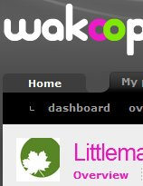

Čertoděj Patrick Zandl psal o Wakoopa, systému, pomocí nějž lze sledovat co mi zrovna na počítači běží a co používám… Krátce službu zhodnotím.
Stáhnu si Wakoopa prográmek. Program jede na pozadí a hoví si v mé paměti, sbírajíc informace o aplikacích, které používám. Narážku v nadpisu jsem samozřejmě myslel jako vtípek, v dnešní době asi opravdu nepoznáte, jestli máte ve Windows o 2 MB RAM méně nebo více… K čemu to ale je? Wakoopa informace shromažďuje a na webu z něj tvoří statistiky. Nu, a jsme u toho.
Můžete se dozvědět, jaký software používáte a jak často. Skvělé! Vaše překvapení bude jistě kulminovat po zjištění, že byste takovou statistiku dokázali sami udělat z hlavy během pár vteřin. Určitě ze sebe vypustíte „uau“, když si na web2.0úžasném webu přečtete to, co už dávno víte.
Dovíte se informace o svém softwaru, dovíte se, když na něj vyjde nějaká recenze. To je jistě přínosné. Velmi často čtu recenze na software, který používám… Ale co… Hlavně že svůj profil můžete sdílet i se svými přáteli… Všechny vaše přátele totiž zajímá, že používáte Firefox nebo Winamp. Denně budou prahnout po vašich statistikách, aby zjistili, jestli jste náhodou nenainstalovali nějaký nový prográmek.
Mmmmm… Tuším, že ne. 90% lidí stejně používá to, co dostane předinstalováno ve svém OS (Windows Media Player), 90% lidí používá PC k brouzdání internetem, psaní textů, přehrávání hudby a filmů. Geekové používají profláklé geekovské prográmky nebo Linux. Wakoopa není pro Linux. Navíc, některé věci trackuje dost divně (například místo stovek hodin strávených v Eclipse mám v profilu Java Platform Standard Edition). Trackuje i sebe, takže máte v profilu permanentně Wakoopa tracker. Komunita je vesměs k ničemu, ale možná je to tím, že jsem power user a vím, jaký software chci. Když mi nabídne „Software I might like“, dostanu IrfanView jako náhradu na Photoshop.
S čím jsem ale do Wakoopa šel? Proč jsem to zkusil a proč mě to zaujalo? Chtěl jsem si vytvořit seznam programů, které používám, aby se na ně mohli ostatní kouknout. Něco jako když se psávalo na osobní web „tohle je software, který mám rád, který je super, zkuste ho taky“. Jenže problém je v tom, že v dnešní době už je ten dobrý software notoricky známý a když se objeví něco fajn a nového, existují lepší způsoby, jak o tom dát vědět. A software není hudba. Nikoho nezajímá, co používám za programy a už vůbec nikoho nezajímá (ani mně), jestli strávím u Firefoxu 550 hodin nebo 40. Když někdo shání prográmek, stejně se mě zeptá přes Jabber přímo…
Závěr? Myslím si, že Wakoopa je k prdu. Pokud platí ono pravidlo, že všechno co používám a čemu věnuji čas, by mi mělo něco přinášet, abych měl důvod to používat, pak tahle Web2.0 pitominka mi nic nedala a proto není důvod se jí věnovat.
 Kindle
Kindle